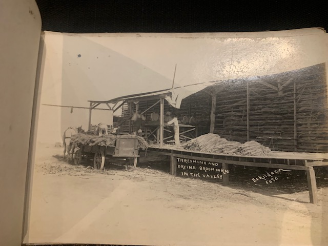
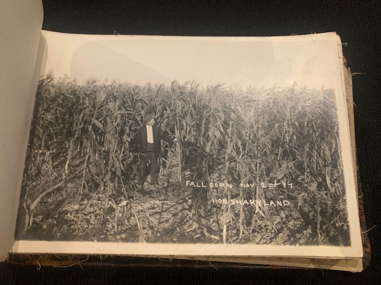

The Collection
Native Life, Rio Grande Valley
This powerful photograph, numbered No. 80 in the collection, was titled "Native Life" by Eskildsen. It offers a profound glimpse into the lives of the diverse communities who called the Valley home.
The Big Buck Hunt

A.H. Malott poses with his prize, 18 miles north of McAllen. This photo captures the adventurous spirit of the era.
Pumping Plant at Hidalgo, Texas
This photograph showcases the impressive Pumping Plant of the La Rio Grande Canal Company in Hidalgo, Texas. According to Eskildsen's own note on the photo, this plant had a capacity of over 300,000 gallons per minute. This piece of industrial architecture was the lifeblood of the "Magic Valley," making large-scale agriculture possible by moving water from the Rio Grande to the fertile farmlands. It's a powerful symbol of the ambition and engineering that transformed the region.
Second Lift Plant, La Rio Grande Canal Co.

This photograph shows the "Second Lift Plant" of the La Rio Grande Canal Company. As a crucial part of the same network as the main pumping plant, this station's job was to lift the water to a higher elevation, allowing it to continue its journey further inland to irrigate more distant farmland. Seeing both the main plant and this second lift plant really illustrates the immense scale and brilliant engineering required to turn the arid landscape of the "Magic Valley" into an agricultural powerhouse.
One of the 60-Inch Pumps, Hidalgo

After seeing the impressive exterior of the pumping plants, Eskildsen takes us inside to reveal the heart of the operation. This photograph features one of the massive 60-inch pumps at the Hidalgo location. The presence of the man standing proudly next to the machinery gives a true sense of scale to this industrial giant. It was technology like this, operated by proud Texans, that powered the agricultural revolution in the Rio Grande Valley.
Building Irrigation Canals in the Rio Grande Valley
Before the massive pumps could move a single gallon of water, an enormous network of canals had to be carved out of the landscape. This incredible photograph captures the raw, foundational labor that made the "Magic Valley" possible. Here we see teams of mules and laborers working tirelessly to build the very arteries that would carry life-giving water to the fertile soil. It's a powerful reminder that behind the great machines were equally great efforts of human and animal toil.
Beautiful Irrigation Canal in the Rio Grande Valley
After showing us the massive pumping plants and the grueling labor of construction, Eskildsen now presents the beautiful, finished result. This tranquil scene shows a completed irrigation canal, filled with the water that would nourish the surrounding land. Gone is the dust and toil of construction, replaced by a serene, life-giving waterway. This photograph is a testament to the realized vision, showcasing the man-made arteries that truly turned the region into the "Magic Valley."
Plenty of Water at Sharyland
This serene photograph showcases the result of the massive irrigation network in a specific, historically significant location: Sharyland. Developed by John H. Shary, a pivotal figure in the region's growth, Sharyland was a massive citrus and agricultural development that depended entirely on this water. The simple, proud caption "Plenty of Water" was more than a description; it was a powerful advertisement to the rest of the country, signaling that this once-arid land was now fertile and ripe for investment. This image is a beautiful portrait of prosperity fulfilled.
October 31st Broom Corn, San Juan
This photograph transitions perfectly from the story of irrigation to the agricultural riches it produced. Taken on October 31st near San Juan, Texas, this isn't just any cornfield—it's a dense crop of Broom Corn. This variety of sorghum was not grown for food, but for its tough, fibrous tassels which were harvested to make brooms. It was a valuable and widespread industrial crop of the era. This image of a successful harvest is a direct testament to the life-giving water that flowed through the newly built canals.
Broom Corn in the Magic Valley
Providing a closer look at this unique crop, this photograph features a man standing amidst the towering stalks of Broom Corn. His presence gives a true sense of scale, showing just how tall and dense the crop grew in the fertile soil of the "Magic Valley." He appears to be inspecting the valuable tassels, or "brush," the part of the plant harvested to manufacture brooms. This image beautifully captures the relationship between the people, the land, and the specific crops that defined the region's economy.
Second Crop of Broom Corn, Sharyland (1917)
Dated November 2nd, 1917, this photograph is a powerful testament to the agricultural miracle of the Rio Grande Valley. The caption highlights the key detail: this is the "Second Crop" of Broom Corn grown on the famous Sharyland development that year. The ability to produce multiple harvests in a single year, with crops still standing tall in November, was a massive draw for investors and settlers from the north. The man in the formal suit, likely a landowner or developer, stands proudly beside the successful crop, a symbol of the immense economic potential unlocked by the new irrigation systems.
Threshing and Drying Broomcorn in the Valley
Completing the story of this vital crop, this photograph documents the crucial step after the harvest: processing. Here, workers are threshing the broomcorn—mechanically separating the seeds from the valuable fibers—before stacking the tassels to dry. The horse-drawn wagon, piled high with raw material, illustrates the continuous flow of work. This image captures the industry and enterprise that surrounded agriculture in the Valley, turning a harvested crop into a market-ready commodity.
Thrashing Broom Corn in the Valley

Providing another view of the broom corn industry, this photograph shows a "thrashing" operation in full swing. On the left, a large, belt-driven machine likely powered the thrasher, showcasing the increasing mechanization of agriculture in the era. A group of workers, perhaps taking a brief rest from the dusty work, sits near the processing station in front of a large barn. Together with the previous photo, this image paints a vivid picture of a bustling, vital industry that was essential to the Valley's economy.
Broom Corn Ready for Shipment
This photograph captures the final and most crucial step in the broom corn industry: connecting the Valley's products to the rest of the nation. What we see here are dozens of tightly packed bales of processed broom corn fiber, stacked on a loading dock and ready for shipment. In the background, a steam locomotive and its long train of boxcars wait on the railroad tracks, the vital artery of commerce. This image perfectly illustrates the economic cycle, from the fields we saw earlier, through processing, and now to the point of sale, showcasing the Valley's role as a key supplier of industrial and agricultural goods.
Kaffir Corn on the Heales Farm
This photograph introduces another vital crop to the Valley's agricultural portfolio: Kaffir Corn. A variety of sorghum similar to the Broom Corn seen earlier, Kaffir Corn was prized as a hardy grain crop, primarily grown for livestock feed. This beautiful field, located on the Heales Farm near the community of Ebenezer, demonstrates the region's crop diversity. It shows that the prosperity brought by irrigation wasn't limited to one industry, but supported a wide range of farming ventures.
Fall Corn in the Magic Valley (December 1917)

This photograph, taken on December 3rd, 1917, is a stunning illustration of the "Magic" in the Magic Valley. While most of North America would be deep into winter, here we see a thriving, tall field of Fall Corn. This ability to grow crops late into the year showcased the unique subtropical climate and long growing season that made the region so attractive to farmers and investors. The two men, standing proudly beside the fruits of their labor, represent the diverse workforce that was essential to building the Valley's agricultural empire.
Fall Corn on Sharyland (November 1917)
Taken on November 2nd, 1917, this photograph serves as another powerful showcase of the Sharyland development's success. Much like the previous photo, it highlights the remarkably long growing season in the Valley, with a field of corn standing tall so late in the year. The man, formally dressed in a suit, stands as a proud proprietor, not just a farmer in his field. He represents the investment, management, and vision that, when combined with the fertile land and new irrigation, yielded such incredible results.
Early Tractor in the Rio Grande Valley

This fantastic photograph captures a true revolution in agriculture: the arrival of the internal combustion tractor. This machine, with its cleated metal wheels and powerful engine, was the high technology of its era, capable of doing the work of many teams of mules in a fraction of the time. The caption, "One of the many in the Rio Grande Valley," is particularly revealing. It tells us that the region's farmers were rapidly modernizing, adopting the latest innovations to maximize the productivity of the newly irrigated land. This image is a powerful symbol of the shift from animal power to machine power.
Cornfield in May (1917)
Dated May 13th, 1917, this photograph captures the sheer abundance of the "Magic Valley" in the prime of its growing season. The corn stands impressively tall and dense, a testament to the region's fertile soil and the life-giving water provided by the irrigation network. If you look closely in the center, you can just see the top of a person's head, giving a wonderful sense of scale and emphasizing how one could easily get lost in this sea of green. It's a quintessential image of American heartland prosperity, made possible by the unique climate of South Texas.
The Johnson Farm near Ebenezer

This beautiful, expansive photograph captures the scale of agriculture in the Valley. Featuring the Johnson Farm near Ebenezer, the image is dominated by a long dirt road that stretches toward the horizon, symbolizing the pathways that connected these new farms to their communities and markets. Unlike the dense fields seen in other photos, this shot showcases the vast, open landscape that promised opportunity and a new life for the families who settled here. It's a portrait of a homestead and the endless potential of the land.